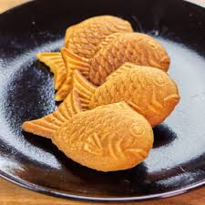

Dango is a Japanese dumpling made with regular rice flour and glutinous rice flour. Recipe |
Leche flan is arguably one of the best Filipino desserts and it includes egg yolks, vanilla extract, milk, and sugar. Recipe |
Taiyaki is a Japanese street food and is sold with that shape of a fish. Recipe |
|---|---|---|
Mochi is a Japanese rice cake made of mochigome (もち米), a short-grain japonica glutinous rice, and sometimes other ingredients such as water, sugar, and cornstarch. Recipe |
Biko is a type of sticky rice cake, otherwise known as kakanin. With a combination of coconut milk and sugar, biko is a delicious dessert. Recipe |
Dorayaki is a type of Japanese confection. It consists of two small pancake-like patties made from castella wrapped around a filling of sweet azuki bean paste. Recipe |
Halo-halo, also spelled haluhalo, Tagalog for "mixed", is a popular cold dessert in the Philippines! Recipe |
Turon are deep fried bananas wrapped in spring roll wrappers. This is a famous dessert and snack in the Philippines. Recipe |
This matcha cheesecake is super creamy with just the right amount of matcha flavor, and it pairs perfectly with a homemade shortbread cookie Recipe |